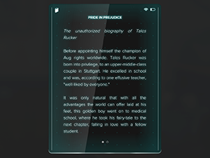

Before appointing himself the champion of Aug
rights worldwide, Talos Rucker was born into privilege, to
an upper-middle class couple in Stuttgart. He excelled in school and
was, according to one effusive teacher, "well-liked by everyone."
It was only natural that with all the advantages the world can offer
laid at his feet, this golden boy went on to medical school, where he
took his fairy-tale to the next chapter, falling in love with a fellow
student.
The moment the two Doctors graduated they simply could not wait to
show the world their enlightened generosity by bringing their white
skin and perfect smiles to the Third World, generously sharing the
advantages of their upbringing with the poor, ignorant savages.
After losing his lover and his limbs in the Vilama Caldera disaster,
Rucker discovered a new cause: Augmentation, which could restore to
him his rightful superiority over the rest of the world.
Toys That Kill
by Angela Gunn
The golden age of local toy production came to an end with the death
of Yvonne Koníčky in September 2022. She
was the last of a great line of Koníčky children who instinctively
knew how to strike a perfect balance
between innocence and innovation. Propeller Frog Boy - voted toy of
the year in 1998 - is a particularly
memorable example.
Today the Koníčky and Hračky toy factory lies in tragic disrepair, a
constant reminder of the childish
innocence our city has lost. Owned by Drahomír Koníčky, Yvonne's son
and business heir, the factory has become
a hotspot for criminal activity. Drahomir is rumored to have spent his
life (and his fortune) cultivating
corrupt police and gang contacts throughout the country. In his few
years at the head of the family business,
he's managed to dry up the family funds, debase the family name, and
turn a beloved childhood landmark into
one of the most dangerous corners of Prague.
I remember walking up to the factory as a little girl and being turned
away by a guard at the gate. We can't
give away the wonderful secrets inside, he said. I don't know what
kind of response a little girl walking up
to Koníčky and Hračky might get today. Ideally, she won't get any
response at all, because her parents will
have told her to stay away.
A., I
by
Johhny Gunn
for Angie...
A., I
took pleasure
in screwing you. over
so much senseless
time. I took
pleasure
killing in the quiet
was kindness
of a kind.
my hands are Sunday's best;
my brave new feet;
I only mind.